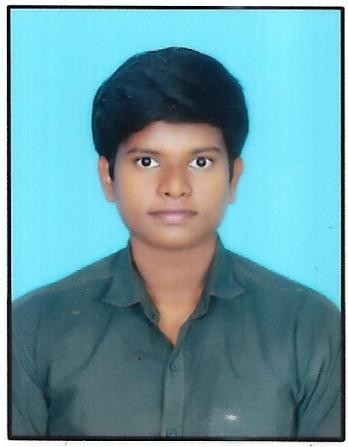

RESUME

- Name: Nikhil Kalvala
- Designation: Mechanical Engineering Student at VNR VJIET
- Contact details:
About me
Hi, I'm Nikhil Kalvala, a passionate and aspiring web developer with a strong foundation in C++ and HTML. Currently pursuing my B.Tech in Mechanical Engineering at VNR VJIET, I have a keen interest in web development and continuously strive to enhance my skills in front-end and back-end technologies.
With a problem-solving mindset and a curiosity for learning, I am eager to explore the world of web development, build interactive and dynamic websites, and create seamless user experiences.
Beyond coding, I enjoy chess, robotics, and exploring new technologies. I am always open to collaboration and exciting opportunities in the tech world.
Academic Details

Technical skills
- Web development
- C++
- Python
- Catia V5
- Autocad
- Video editing
- Basics of ansys
- Canva
Experience
Digital Marketing Intern
Roles:
- Developed email marketing campaigns to increase client appointments for Atut Media.
- Wrote compelling copy for client communications to drive engagement and conversions.
- Analyzed campaign performance data to optimize strategies for better results.
Projects
- Analysis of Spanner in ANSYS Workbench (June 2024)
- 3D modeled in Catia V5, assigned materials, applied forces, meshed, and analyzed results.
- Development of Screw Jack 3D Model in Catia V5 (May 2024)
- Created individual parts and assembled them.
Acchievements
- Academic acchivements
- Completed multiple courses on Infosys Springboard & TCS iON Learning.
- Co-Curricular & Extra-Curricular:
- Volunteered at International Startup Festival
- Won 1st Prize in School Science Fair.
- Advanced to district-level chess competition.
Strengths
- Curiosity for learning
- Quick Learning
- Problem Solving
- Communication
- Analytical thiking
- Leadership
Personal information
- Languages: English, Telugu, Hindi, German
- Hobbies: Chess, Watching Battle Bots, Learning new languages, Reverse Engineering
- Interests: Robotics, Mobile Technology, Photography, Supercars, Traveling
- Address: Hyderabad, Telangana, 500090
Declaration
“To the best of my knowledge the above statements are true and I understand that with holding or misstating any fact may result in the refusal for offer.”
**Digital Signature**
NIKHIL KALVALA